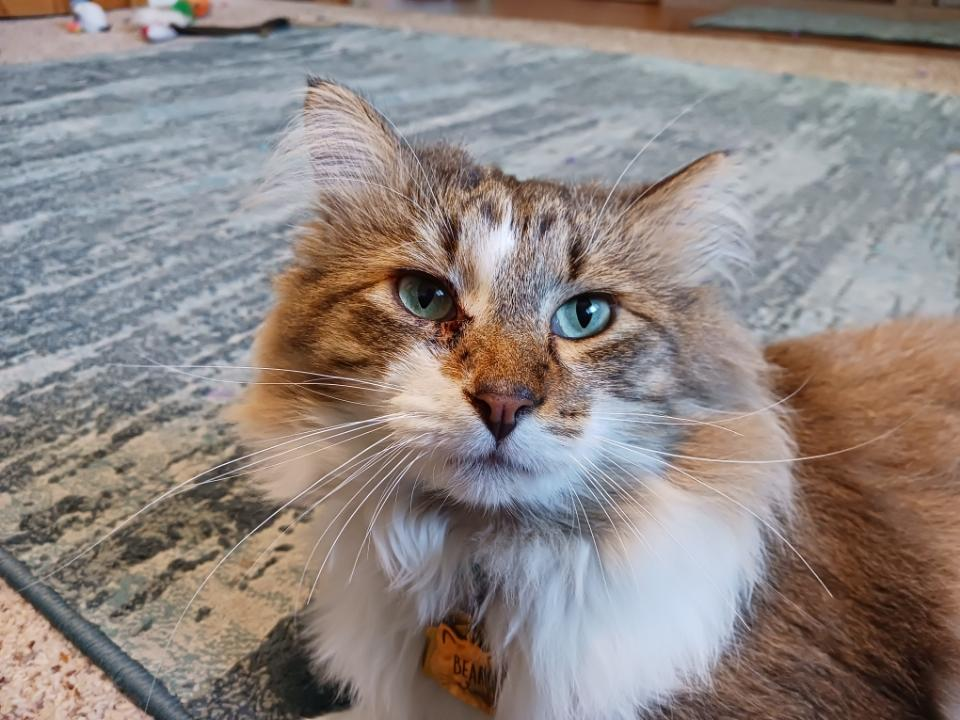

| The Prrr-fect Pet | Man's Best Friend | |
|---|---|---|
|  | ||
|
|
|
|
A Cat is clearly the better pet choice. To see about getting a cat of your own, find out more here. |
How could you not choose a Dog? To see about getting a dog of your own, find out more here. |